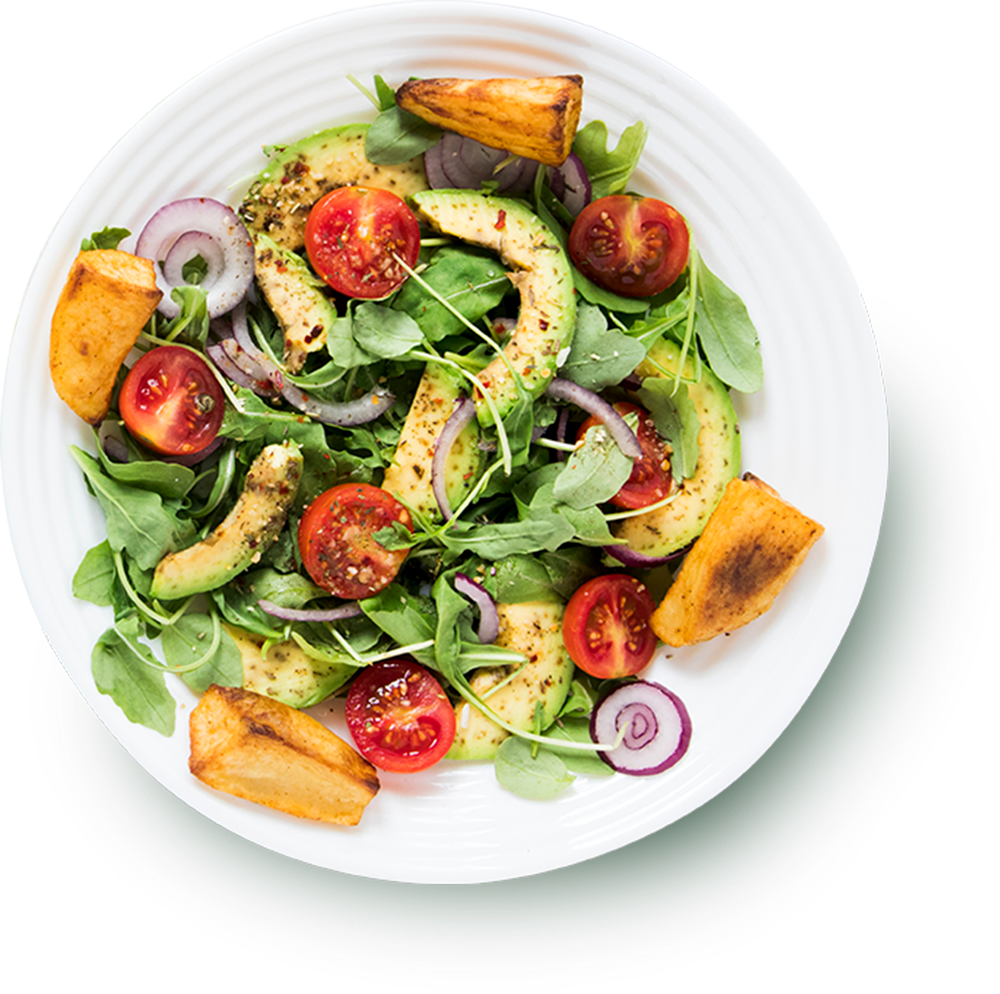

Здоровая еда - это просто!
Сеть магазинов полезных продуктов питания, производство которых основано на принципах и стандартах органического чистых продуктов

Сеть магазинов полезных продуктов питания, производство которых основано на принципах и стандартах органического чистых продуктов
Органика — это целостная система производства по-настоящему чистой, натуральной и полезной продукции